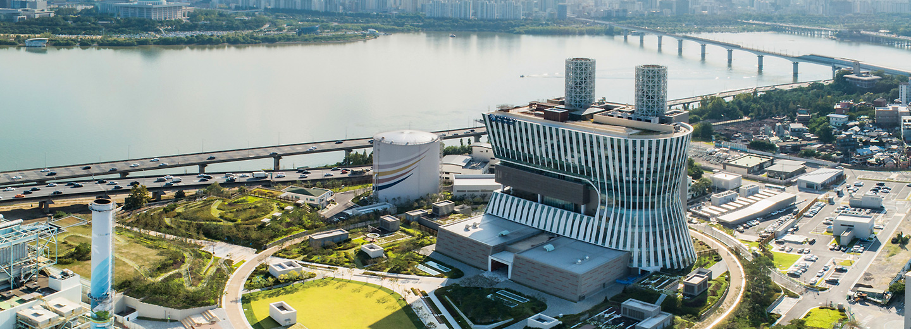

세계 최초 도심 대용량 지하발전소, 서울의 에너지로 힘찬 출발을 합니다.
제주발전본부
한국중부발전은 우리나라 전력산업의 살아있는 역사인 마포구 당인동 첫 화력발전소의 자리에서, 대한민국 화력발전소 건설 및 운영 기술과 노하우의 총 집약체인 세계 최초의 도심 대용량 지하발전소 건설이라는 위업을 달성하였습니다. 2019년 11월 상업운전을 시작하며 전력생산을 시작하였습니다.
서울발전본부의 완공 전 서울시의 전력 자립도는 0.02%에 불과 했습니다. 서울발전본부에서 생산되는 800MW의 전력은 서울시의 370만 가구 중 절반가량에서 사용할 수 있는 규모입니다. 서울발전본부는 전기 공급뿐만 아니라 전력생산 과정에서 발생한 증기를 열공급 설비로 보내 여의도 등 발전소 인근의 10만 가구에 난방열도 공급하고 있습니다. 각 가정에서의 개별난방에 비교하여 환경오염물질의 배출도 감소시키며, 개별난방 시보다 연간 78,000톤의 CO2 절감효과도 있습니다. 전쟁, 재난 등으로 인해 전력계통이 끊기거나 외부와의 차단으로 서울지역의 전력 공급에 문제가 발생하였을 경우 중요시설의 필수 전력공급에 대비할 수 있습니다. 특히 발전시설이 지하에 위치해 있어 보안에도 큰 강점이 있습니다.


깨끗하고 안전한 지하발전소를 만들었습니다.
서울발전본부의 연료원은 LNG로 석탄화력발전소와는 달리 황산화물과 먼지가 배출되지 않습니다. 서울발전본부는 대기환경보전법 질소산화물 배출허용기준인 20ppm(O 2 15%) 보다 훨씬 낮은 5ppm 이하로 배출되도록 운영하고 있습니다. 화염온도를 낮추어 질소산화물을 저감시키는 저 NOx 버너가 설치되어 있고, 설비 후단에는 연소 중 생성된 질소산화물을 질소와 수증기로 바꿔주는 최적 방지시설인 배연탈질설비가 설치되어 있습니다. 지하발전소 내부 둘레에는 한강물의 침수와 지진에 대비하여 두꺼운 외벽을 설치하였는데, 원자력발전소의 외벽구조물(1.2m) 보다 훨씬 두꺼운 4.2m 두께의 외벽을 시공하였고, 대규모 지진의 진동에너지도 견딜 수 있도록 설계되었습니다. 또한 가스누출을 근원적으로 차단하는 특수공법으로 설계, 건설되었고 상시 모니터링을 통해 문제가 발생할 경우 가스공급과 발전기 운영이 자동으로 정지됩니다.
대한민국 최초의 화력발전소, 100년 전력사의 유적입니다.
1930년 당인리발전소 1,2호기를 시작으로 1950년 3호기, 1969년 5호기, 1971년 4호기로 설비를 늘려가며 1970년대에는 서울지역 전력공급의 75%를 담당할 정도로 큰 규모의 발전소였으며, 우리나라의 경제성장과 함께하였던 살아있는 산업유산입니다. 당인리발전소 서울화력은 대한민국 에너지 사용의 변천사를 고스란히 반영하며, 시대의 변화에 따라 석탄에서 저유황유, 다시 LNG로 연료를 전환하여 운영하여 왔습니다. 또한, 서울의 지역 난방열 공급을 위해 열 공급 설비도 추가 하였습니다.
2018 Asian Power Awards
"아시아 최고의 가스발전소상"수상
2020
대한민국 화력발전 90년 역사의 쾌거
미국 "S&P Global Platts"
2020 Global Energy Awards
최소의 건설프로젝트상 수상
지속적인 환경 친화경영을 통한 23년 연속 녹색기업으로 선정
최신식 설비로의 교체 운영으로 인천발전본부는 고효율 복합발전설비의 안정적 운영을 통해 수도권의 전력수급 안정에 큰 역할을 담당하고 있습니다. 1970년부터 시작된 인천지역 발전의 역사를 고스란히 간직한 인천발전본부는 지역사회의 일원으로 사회봉사활동, 문화행사 지원 등 사회공헌 활동을 적극적으로 추진하고 있으며, 철저한 환경관리와 지속적인 환경 친화경영을 통하여 1996년부터 7회 연속 연속 환경부의 녹색기업으로 인증 받는 등 깨끗하고 청정한 지역 만들기에도 앞장서고 있습니다.
서울발전본부 설비현황
| 화력 | 연료전지 | 태양광 | 양양풍력 | 원주그린 | 총계 |
|---|---|---|---|---|---|
| 800MW | 5.6MW | 1.3MW | 3MW | 10MW | 819.9MW |